In the last decade, people buy significantly less printed
books. A lot of us prefer electronic books due to the many benefits they can provide compared to the normal book. On the other hand, there are still those who love ‘the feeling of reading the real book’. But the truth is that it is a hard task to impress a reader and attract his attention with a usual book. In book stores, there are hundreds of books and it is very likely that most of them will not be even noticed. What is the future of printed books? How can we make a book more visible?
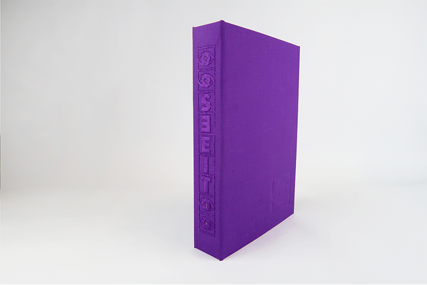
‘See it’ is a book concept which combines all valuable properties of a printed book and opens the door for the interaction between the reader and a book. It is a book which can attract the attention of a reader in a different unexpected way. Using the sensor integrated into the cover the book reacts to the motion around it and responds on it with a light (also integrated into the book spine). Therefore if a customer tries
to reach a book near it, the ‘See it’ book will be definitely noticed and arouse the interest to it.
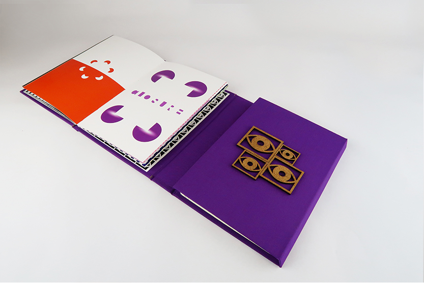
The concept of an interactive book covers includes covers which can attract the attention of a reader in a different way such as light, sound, color or touch.
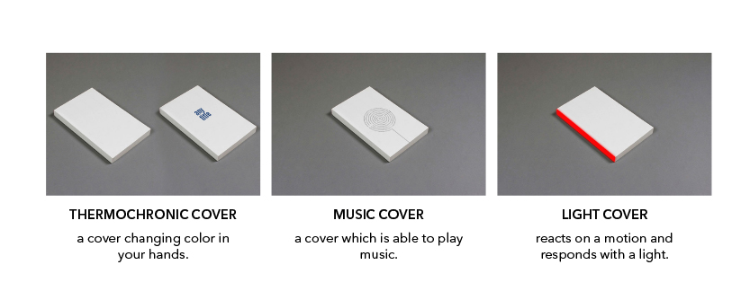
Details of the book
1
Special type of binding: French door
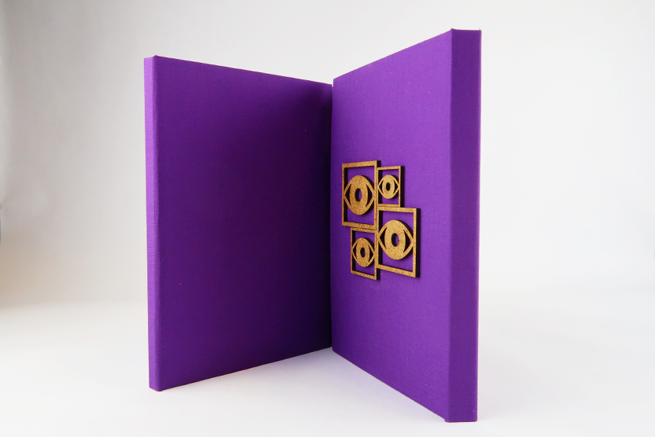
2
Double-Sided book:
left − the actual book
right − a place for electronic components
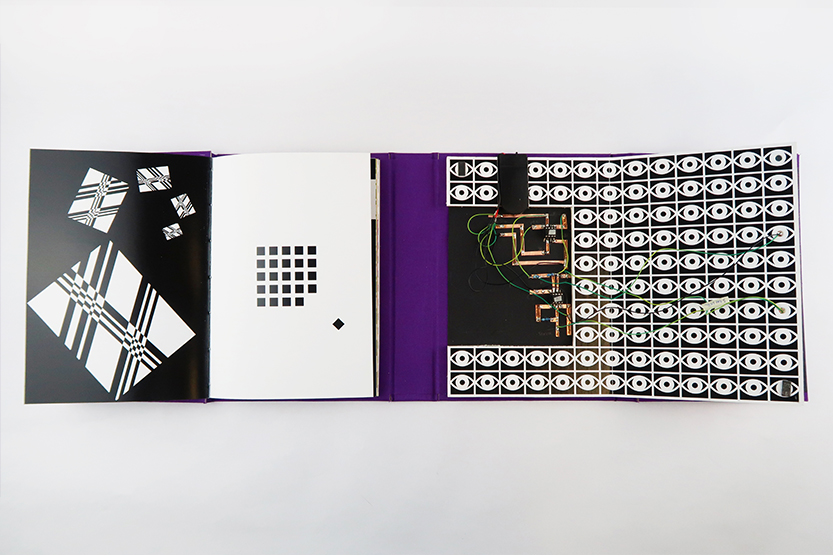
3
All illustrations support the idea of the book and based on gestalt principles an and visual perception
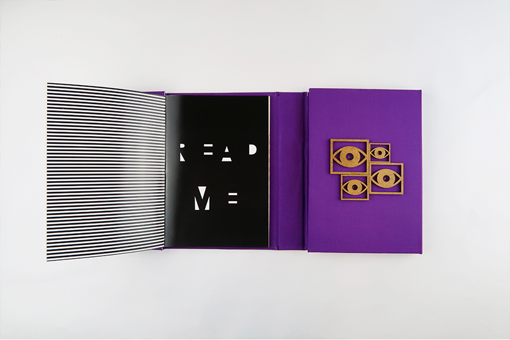
4
The book consists of two parts: black and white and color. The idea is to show how colour can affect our perception
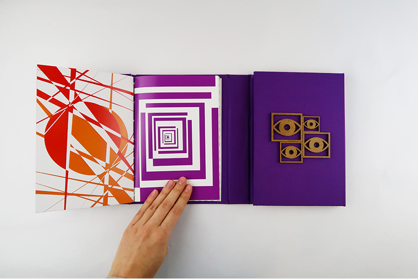
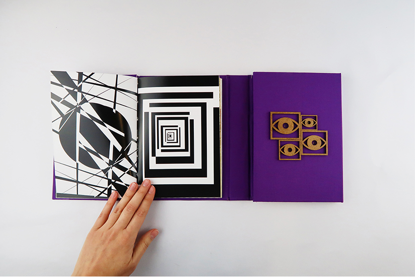
5
Spine made with embroidery machine and two layers of paper
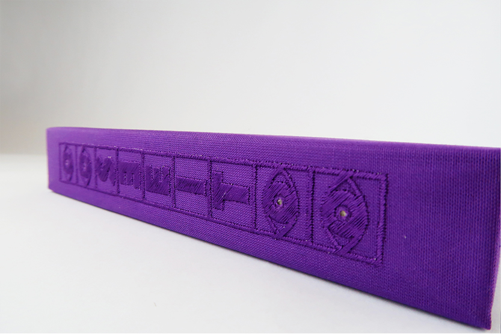
6
Switch hidden in the right part of the book
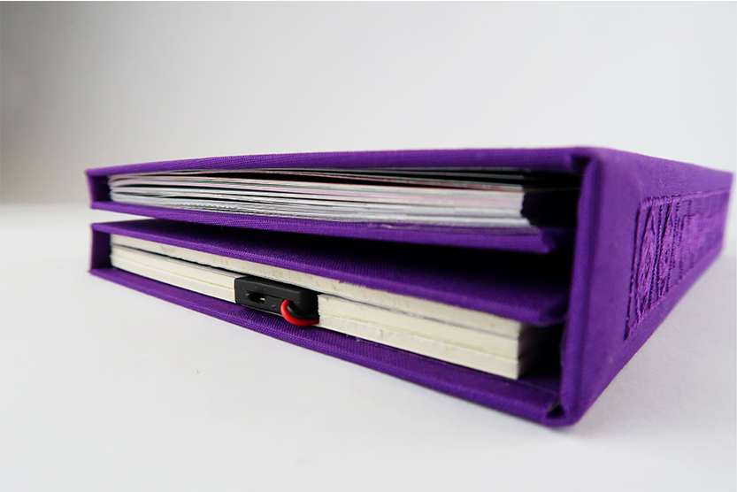
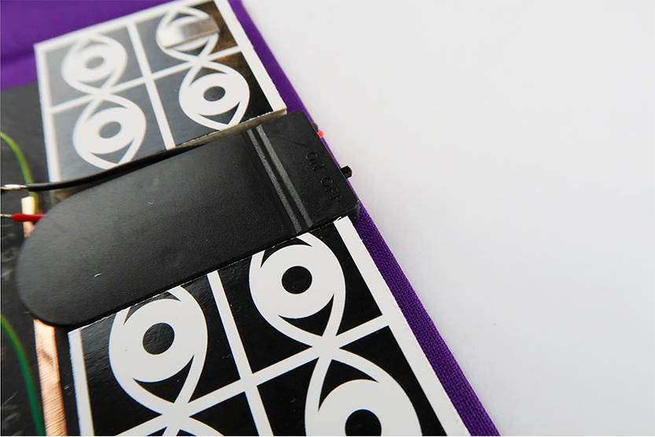
7
The right side of the book hides all electronic components
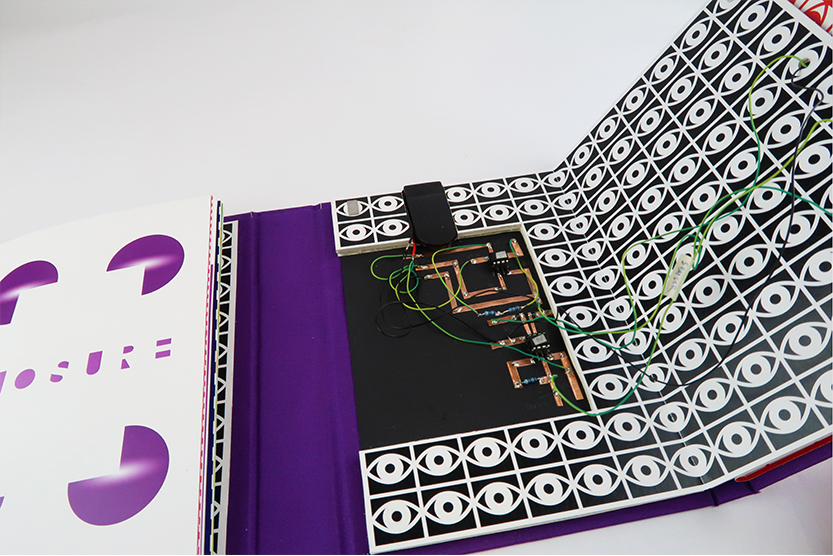
8
The Right side of the book is easily accessible due to magnetic lock
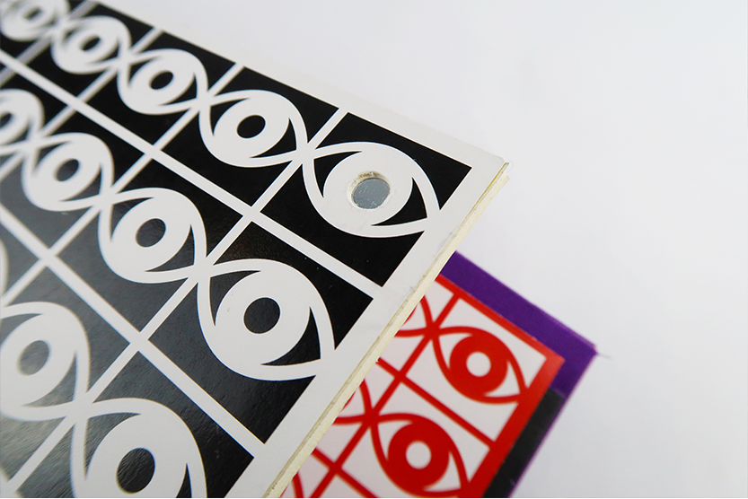
9
Debossing on the front (book identity) and back (author Sign) cover